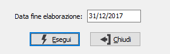

Elaborazione valorizzazione FIFO
Il programma esegue la valorizzazione FIFO; i dati elaborati vengono memorizzati nei campi corrispondenti della tabella FIFO. E’ possibile effettuare la elaborazione della valorizzazione FIFO utilizzando il calcolo valore secondo le modalità prevista dal FIFO continuo oppure a scatti. Tale funzionalità viene attivata attraverso un parametro presente nella configurazione. Le differenze fra i due metodi possono essere riepilogate secondo il seguente schema:
Calcolo "a scatti": viene effettuato il calcolo del valore sulla base della variazione della giacenza finale rispetto alla giacenza iniziale. Se la variazione è negativa (giacenza finale inferiore alla giacenza iniziale) il valore è dato dal valore delle scorte accantonate negli esercizi precedenti più recenti; se la variazione è positiva (la giacenza finale è superiore alla giacenza iniziale) il valore è dato dalla somma del valore delle scorte accantonate negli esercizi precedenti più recenti incrementato del valore della variazione in eccedenza (calcolato in base al prezzo medio di carico dell'esercizio stesso).
Calcolo "continuo": il valore della giacenza finale viene calcolato in base ai prezzi dei movimenti di carico del periodo elaborato. L’elaborazione viene effettuata andando a scalare in concorrenza dai movimenti di carico i movimenti di scarico, partendo dal meno recente. I movimenti che non sono stati completamente scalati rappresentano la quantità e il valore della scorta finale.

DATA FINE ELABORAZIONE:data obbligatoria per determinare la data a cui si riferiscono le esistenze da esaminare. Viene proposta automaticamente dal programma.